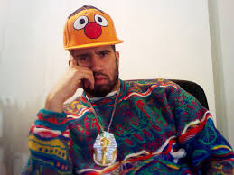

Jayson Musson
Jayson Scott Musson was born in the Bronx and came up through Philadelphia's art scene, getting his BFA
in photography from the University of the Arts and his MFA in painting from the University of
Pennsylvania. He also attended Skowhegan School of Painting and Sculpture in 2011, right as his work was
gaining serious traction. By the early 2010s, he had blue-chip gallery representation with Salon 94 in
New York and Fleisher/Ollman in Philadelphia, showing work at major institutions like the Whitney
Museum, MoCA Chicago, Whitechapel Gallery in London, and Galerie Perrotin in Paris. But while building
this conventional gallery career, Musson simultaneously became a cult figure online through his
satirical alter ego Hennessy Youngman and the Art Thoughtz YouTube series. Starting in 2010, filming
from his Philadelphia apartment wearing a backwards hat and speaking in slang prose, Youngman broke down
the art world and its .. with a mix of humor and uncomfortable truths.